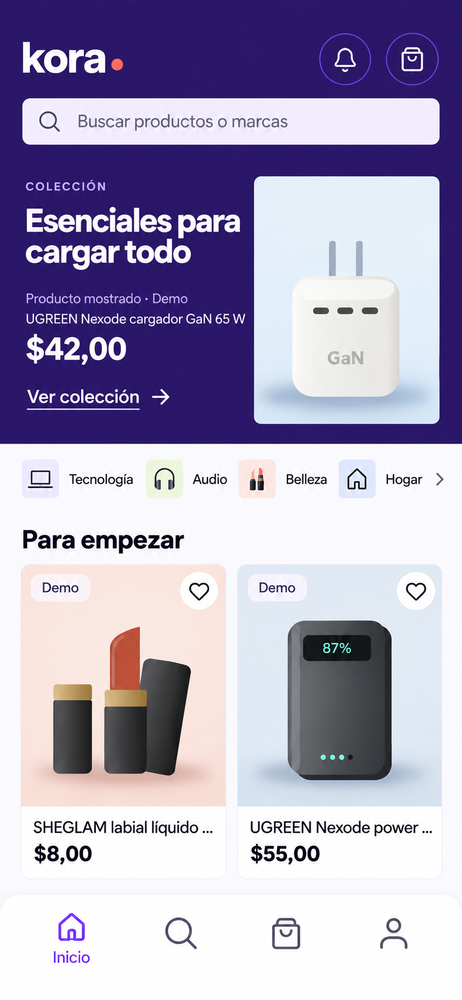
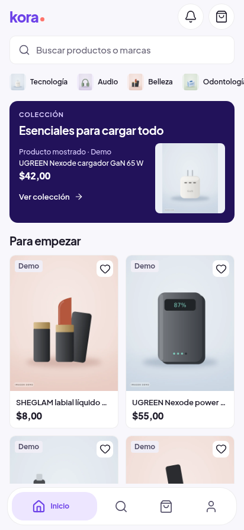
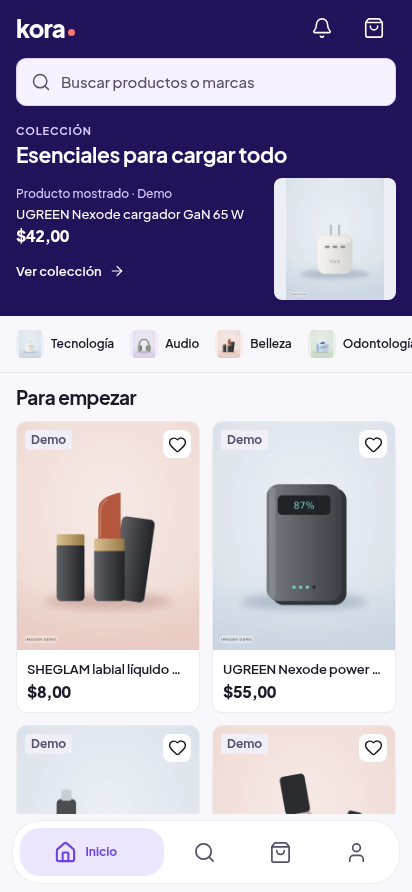

C: continuidad comercial con una apertura compacta
Dirección elegida por Oliver. La referencia ImageGen es un esquema, mientras que antes/después de la app son capturas web reales del mismo catálogo y viewport. No son pruebas físicas Android. Los assets de la app siguen siendo ilustraciones Demo originales; ninguna imagen generada sustituye el catálogo.
Informe, pruebas y recepción · Geometría del esquema · Medidas DOM
Cargando medidas…
C elegida · referencia

Esquema generado original, claro/412 de referencia. Borde en y=819 sobre853 de ancho: banda 395,58 px a412. Se mantiene esta fuente sin fingir un modo oscuro o reflow320 que no existía.
App antes · superficies separadas

Antes real normal: marca/búsqueda/categorías y tarjeta editorial separadas. Si seleccionas estrés, esta imagen permanece normal y se identifica así; no se inventa una captura ampliada anterior.
C corregida · app real web

Captura de la implementación. Ver scroll y búsqueda persistente. Solo normal es comparable directamente con el antes real; CSS es estrés de la versión nueva.
La banda normal mide **316/319 px** a 412/320. Conserva C: no se movieron productos antes de la editorial ni se separaron las dos filas de selección. Frente a la app publicada anterior, el primer producto mejora 8 px; frente al esquema C elegido, la banda mejora 79,58 px. Son comparaciones diferentes.
| Evidencia | Altura | Qué demuestra |
|---|
| C elegida | 395,58 px | Geometría raster reproducible del esquema, no reflow |
| Ideación corregida ImageGen | 363,70 px | Exploración insuficiente por sí sola; original |
| C implementada normal | 316/319 px | DOM real de la app, ambos temas/anchos |
| Texto CSS 1,6 | 463,38/527,38 px | Crece sin cortar; fontScale nativo permanece1 |
Auditor, UX/UI y ecommerce aprobaron fuente/capturas de C. Android40 aprobó4/4, fuente OS1,6 y recepción confirmadas por separado. Evidencia nativa. No es recepción física en Samsung.